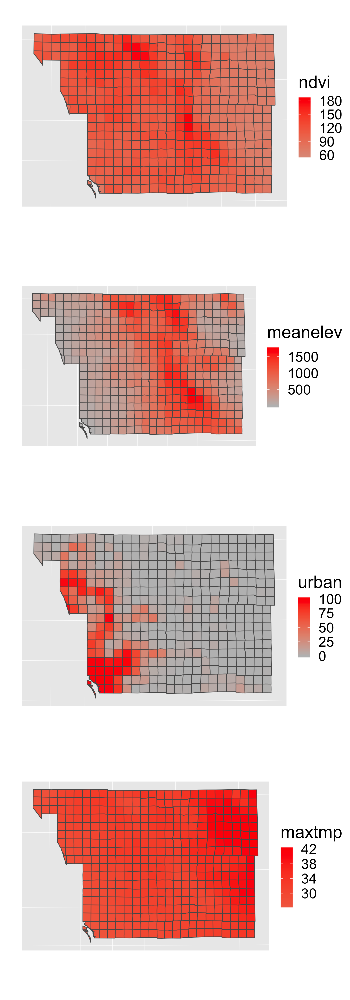
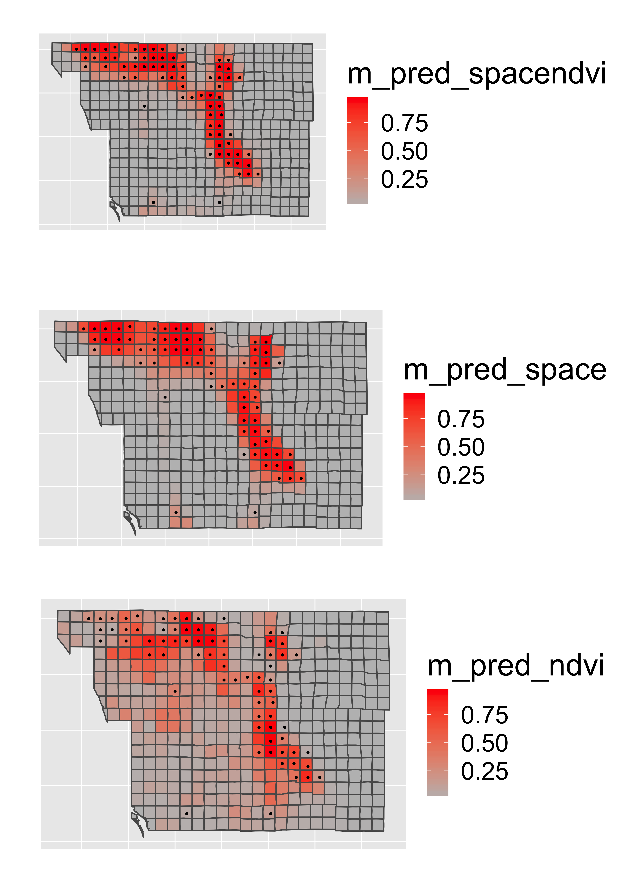
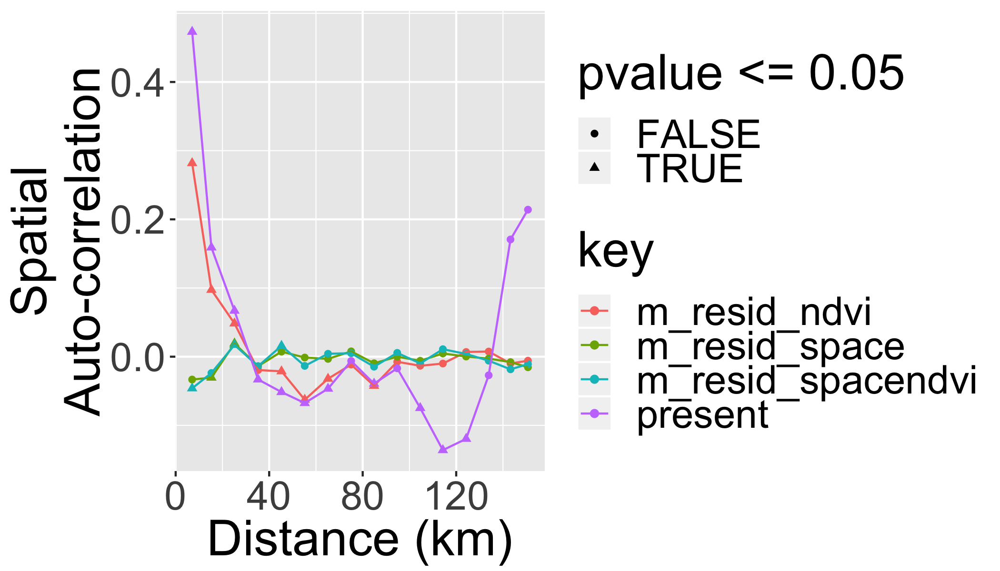

Spatially-explicit logistic regression
The R Script associated with this page is available here. Download this file and open it (or copy-paste into a new script) with RStudio so you can follow along.
library(knitr)
library(raster)
library(rasterVis)
library(dplyr)
library(ggplot2)
# devtools::install_github("dkahle/ggmap")
library(ggmap)
library(rgdal)
library(rgeos)
library(tidyr)
library(sf)
library(leaflet)
library(DT)
library(widgetframe)
## New Packages
library(mgcv) # package for Generalized Additive Models
library(ncf) # has an easy function for correlograms
library(grid)
library(gridExtra)
library(xtable)
library(maptools)Goal of this class
- To demonstrate a simple presence/absence modelling in spatial context.
- To model spatial dependence (autocorrelation) in the response.
Overview of R’s spatial toolset is here.
Note: this is not meant to be an exhaustive introduction to species distribution modelling.
Modeling spatial autocorrelation
Today we will model space by smooth splines in mgcv package.
Examples of Alternative approaches:
- Simple polynomials
- Eigenvector Mapping:
vegan,spdep - Predictive process:
spbayes
Methods that tweak variance-covariance matrix of Multivariate Normal Distribution:
- Generalized Least Squares:
MASS,nlme - Autoregressive Models:
spdep - GeoBUGS module in OpenBUGS
See Dormann et al. 2007 Ecography, 30: 609-628 for a review.
Species Distribution Modeling
We’ll attempt to explain the spatial distribution of the Purple finch (Carpodacus purpureus) in San Diego county, California:
 (photo/Wikimedia)
(photo/Wikimedia)
Preparing the data
Load a vector dataset (shapefile) representing the San Diego bird atlas data for the Purple finch:
finch <- read_sf(system.file("extdata", "finch",
package = "DataScienceData"),
layer="finch")
st_crs(finch)="+proj=utm +zone=11 +ellps=GRS80 +datum=NAD83 +units=m +no_defs "Plot the shapefile
Plot the finch dataset in leaflet.
st_transform(finch,"+proj=longlat +datum=WGS84")%>%
leaflet() %>% addTiles() %>%
addPolygons()%>%
frameWidget(height=400)But we can do better than that. Let’s add a couple layers and an overview map.
st_transform(finch,"+proj=longlat +datum=WGS84")%>%
leaflet() %>% addTiles() %>%
addPolygons(label=paste(finch$BLOCKNAME," (NDVI=",finch$ndvi,")"),
group = "NDVI",
color = "#444444",
weight = 0.1,
smoothFactor = 0.5,
opacity = 1.0,
fillOpacity = 0.5,
fillColor = ~colorQuantile("YlOrRd", ndvi)(ndvi),
highlightOptions = highlightOptions(color = "white", weight = 2,
bringToFront = TRUE)) %>%
addPolygons(label=paste(finch$BLOCKNAME," (NDVI=",finch$ndvi,")"),
group = "Presence/Absence",
color = "#444444",
weight = 0.1,
smoothFactor = 0.5,
opacity = 1.0,
fillOpacity = 0.5,
fillColor = ifelse(finch$present,"red","transparent"),
highlightOptions = highlightOptions(color = "white", weight = 2,
bringToFront = TRUE)) %>%
addLayersControl(
baseGroups = c("NDVI", "Presence/Absence"),
options = layersControlOptions(collapsed = FALSE)
)%>%
addMiniMap()%>%
frameWidget(height = 600)Your turn
Explore the other variables in the finch dataset with summary(finch). Build on the map above to add the mean elevation (meanelev) in each polygon as an additional layer.
st_transform(finch,"+proj=longlat +datum=WGS84")%>%
leaflet() %>% addTiles() %>%
addPolygons(label=paste(finch$BLOCKNAME," (NDVI=",finch$ndvi,")"),
group = "NDVI",
color = "#444444",
weight = 0.1,
smoothFactor = 0.5,
opacity = 1.0,
fillOpacity = 0.5,
fillColor = ~colorQuantile("YlOrRd", ndvi)(ndvi),
highlightOptions = highlightOptions(color = "white", weight = 2,
bringToFront = TRUE)) %>%
addPolygons(label=paste(finch$BLOCKNAME," (Elevation=",finch$meanelev,")"),
group = "Elevation",
color = "#444444",
weight = 0.1,
smoothFactor = 0.5,
opacity = 1.0,
fillOpacity = 0.5,
fillColor = ~colorQuantile("YlOrRd", meanelev)(meanelev),
highlightOptions = highlightOptions(color = "white", weight = 2,
bringToFront = TRUE)) %>%
addPolygons(label=paste(finch$BLOCKNAME," (NDVI=",finch$ndvi,")"),
group = "Presence/Absence",
color = "#444444",
weight = 0.1,
smoothFactor = 0.5,
opacity = 1.0,
fillOpacity = 0.5,
fillColor = ifelse(finch$present,"red","transparent"),
highlightOptions = highlightOptions(color = "white", weight = 2,
bringToFront = TRUE)) %>%
addLayersControl(
baseGroups = c("NDVI", "Elevation","Presence/Absence"),
options = layersControlOptions(collapsed = FALSE)
)%>%
addMiniMap()%>%
frameWidget(height=600)You could also visualize these data with multiple ggplot panels:
p1=ggplot(finch) +
scale_fill_gradient2(low="blue",mid="grey",high="red")+
coord_equal()+
ylab("")+xlab("")+
theme(legend.position = "right")+
theme(axis.ticks = element_blank(), axis.text = element_blank())
p1a=p1+geom_sf(aes(fill = ndvi))
p1b=p1+geom_sf(aes(fill = meanelev))
p1c=p1+geom_sf(aes(fill = urban))
p1d=p1+geom_sf(aes(fill = maxtmp))
grid.arrange(p1a,p1b,p1c,p1d,ncol=1) 
Explore the data
Now look at the associated data frame (analogous to the *.dbf file that accompanies a shapefile):
datatable(finch, options = list(pageLength = 5))%>%
frameWidget(height=400)Note: in your final projects, don’t simply print out large tables or outputs… Filter/select only data relevent to tell your ‘story’…
Scaling and centering the environmental variables
Statistical models generally perform better when covariates have a mean of zero and variance of 1. We can quickly calculate this using the scale() function:
First let’s select only the columns we will use for modeling.
finch=mutate(finch,ndvi_scaled=as.numeric(scale(ndvi)))Fitting the models
Compare three models:
- Only NDVI
- Only Space
- Space and NDVI
Model 1 - only NDVI
Now we will do the actual modelling. The first simple model links the probability of a presences or absences to NDVI.
log(pi/1 − pi)=β0 + β1NDVIi
oi ∼ Bernoulli(pi)
Note: this assumes residuals are iid (independent and identically distributed).
It can be fitted by simple glm() in R:
ndvi.only <- glm(present~ndvi_scaled,
data=finch, family="binomial")Extract predictions and residuals:
finch$m_pred_ndvi <- predict(ndvi.only, type="response")
finch$m_resid_ndvi <- residuals(ndvi.only)Plot the estimated logistic curve:
ggplot(finch,aes(x=ndvi/256,y=m_pred_ndvi))+
geom_line(col="red")+
geom_point(mapping=aes(y=present))+
xlab("NDVI")+
ylab("P(presence)")
Print a summary table:
xtable(ndvi.only,
caption="Model summary for 'NDVI-only'")%>%
print(type="html")| Estimate | Std. Error | z value | Pr(>|z|) | |
|---|---|---|---|---|
| (Intercept) | -2.9388 | 0.2960 | -9.93 | 0.0000 |
| ndvi_scaled | 2.6521 | 0.3223 | 8.23 | 0.0000 |
Model 2 - only space
The second model fits only the spatial trend in the data (using GAM and splines):
space.only <- gam(present~s(X_CEN, Y_CEN),
data=finch, family="binomial")Extract the predictions and residuals
finch$m_pred_space <- as.numeric(predict(space.only, type="response"))
finch$m_resid_space <- residuals(space.only)Plot the spatial term of the model:
finch$m_space=as.numeric(predict(space.only,type="terms"))
st_transform(finch,"+proj=longlat +datum=WGS84")%>%
leaflet() %>% addTiles() %>%
addPolygons(color = "#444444",
weight = 0.1,
smoothFactor = 0.5,
opacity = 1.0,
fillOpacity = 0.5,
fillColor = ~colorQuantile("YlOrRd", m_space)(m_space),
highlightOptions = highlightOptions(color = "white", weight = 2,
bringToFront = TRUE))%>%
frameWidget(height=200)Print a summary table
xtable(summary(space.only)$s.table,
caption="Model summary for 'Space-only'")%>%
print(type="html")| edf | Ref.df | Chi.sq | p-value | |
|---|---|---|---|---|
| s(X_CEN,Y_CEN) | 28.83 | 28.98 | 51.06 | 0.01 |
Model 3 - space and NDVI
The third model uses both the NDVI and spatial trends to explain the finch’s occurrences:
space.and.ndvi <- gam(present~ndvi + s(X_CEN, Y_CEN),
data=finch, family="binomial")
## extracting predictions and residuals:
finch$m_pred_spacendvi <- as.numeric(predict(space.and.ndvi, type="response"))
finch$m_resid_spacendvi <- residuals(space.and.ndvi)Print a summary table
xtable(summary(space.and.ndvi)$s.table,
caption="Model summary for 'Space and NDVI'")%>%
print(type="html")| edf | Ref.df | Chi.sq | p-value | |
|---|---|---|---|---|
| s(X_CEN,Y_CEN) | 23.35 | 25.84 | 47.74 | 0.01 |
Plot the spatial term of the model:
finch$m_ndvispace=as.numeric(predict(space.and.ndvi,type="terms")[,2])
st_transform(finch,"+proj=longlat +datum=WGS84")%>%
ggplot(aes(x=X_CEN,y=Y_CEN)) +
geom_sf(aes(fill = m_ndvispace))+
geom_point(aes(col=as.logical(present)))+
scale_fill_gradient2(low="blue",mid="grey",high="red",name="Spatial Effects")+
scale_color_manual(values=c("transparent","black"),name="Present")
Examine the fitted models
Now let’s put all of the predictions together into a single long table:
p1=st_transform(finch,"+proj=longlat +datum=WGS84")%>%
ggplot()+
scale_fill_gradient2(low="blue",mid="grey",high="red")+
scale_color_manual(values=c("transparent","black"),name="Present",guide="none")+
coord_equal()+
ylab("")+xlab("")+
theme(legend.position = "right")+
theme(axis.ticks = element_blank(), axis.text = element_blank())
pts=geom_point(data=finch,aes(x=X_CEN,y=Y_CEN,col=as.logical(present)),size=.5)
p1a=p1+geom_sf(aes(fill = m_pred_spacendvi))+pts
p1b=p1+geom_sf(aes(fill = m_pred_space))+pts
p1c=p1+geom_sf(aes(fill = m_pred_ndvi))+pts
grid.arrange(p1a,p1b,p1c,ncol=1) 
Model comparison
We can compare model performance of the models with Akaike’s Information Criterion (AIC). This uses the formula AIC = −2 * log − likelihood + k * npar, where
- npar number of parameters in the fitted model
- k = 2 penalty per parameter
Lower is better…
datatable(AIC(ndvi.only,
space.only,
space.and.ndvi))Spatial Autocorrelation of Residuals
Should always check the spatial correlation in model residuals to evaluate assumptions. We will use the function correlog from the ncf package.
inc=10000 #spatial increment of correlogram in m
# add coordinates of each polygon's centroid to the sf dataset
finch[,c("x","y")]=st_centroid(finch)%>%st_coordinates()
#use by() in dplyr package to compute a correlogram for each parameter
cor=finch%>%
dplyr::select(y,x,contains("resid"),present)%>%
gather(key = "key", value = "value",contains("resid"),present,-y,-x)%>%
group_by(key)%>%
do(var=.$key,cor=correlog(.$x,.$y,.$value,increment=inc, resamp=100,quiet=T))%>%
do(data.frame(
key=.$key[[1]],
Distance = .$cor$mean.of.class/1000,
Correlation=.$cor$correlation,
pvalue=.$cor$p, stringsAsFactors=F))And we can plot the correlograms:
ggplot(cor,aes(x=Distance,y=Correlation,col=key,group=key))+
geom_point(aes(shape=pvalue<=0.05))+
geom_line()+
xlab("Distance (km)")+ylab("Spatial\nAuto-correlation")
What did we gain by making the model “spatially explicit”?
- We know that the effect of NDVI is not artificially amplified by pseudoreplication.
- We have more realistic predictions.
- We have a fitted surface that can be interpreted – perhaps to guide us towards some additional spatially-structured predictors that can be important.
Your turn
Try adding additional co-variates into the spatial model (e.g. elevation or climate).
m1 <- gam(present~ndvi+meanelev+
wintert+meanppt+urban +
s(X_CEN, Y_CEN),
data=finch, family="binomial")
m2 <- gam(present~ndvi+meanppt +
s(X_CEN, Y_CEN),
data=finch, family="binomial")Print a summary table
xtable(summary(m1)$p.table)%>%
print(type="html")| Estimate | Std. Error | z value | Pr(>|z|) | |
|---|---|---|---|---|
| (Intercept) | -8.93 | 19.66 | -0.45 | 0.65 |
| ndvi | 0.08 | 0.03 | 2.67 | 0.01 |
| meanelev | -0.01 | 0.01 | -1.02 | 0.31 |
| wintert | -0.88 | 1.57 | -0.56 | 0.58 |
| meanppt | 0.03 | 0.02 | 1.33 | 0.18 |
| urban | 0.00 | 0.03 | 0.17 | 0.87 |
Compare all models
datatable(AIC(ndvi.only,
space.only,
space.and.ndvi,
m1,m2))